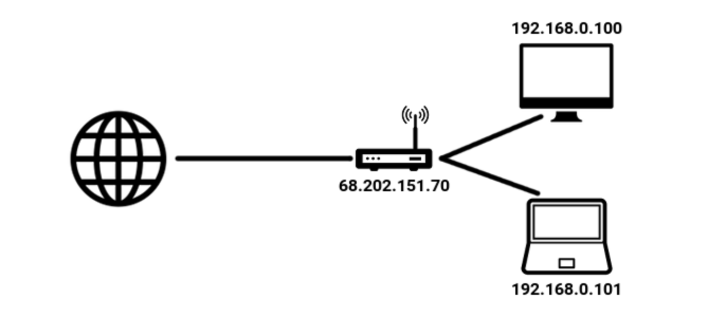
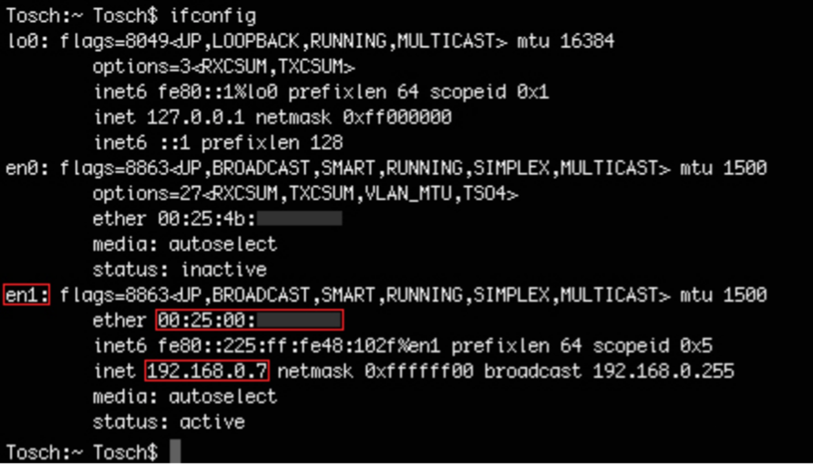

Network and MITM attacks
Private IPs
Once you've connected to a Wi-Fi network you want to develop good "hacking habits" and start off by determining what type of subnet you're on. This is important for a few reasons but mainly to give you some insight into the network configuration and how evasive you should be while on the network.
In general
it's assumed if you've hacked onto your neighbors Wi-Fi network, connected to a small to medium sized businesses Wi-Fi network, or connected to your local coffee shop Wi-Fi network then we don't really need to modify much and we can simply attack each client on the network. If you've compromised a medium to large sized business or hacked onto a corporate network then there are steps you need to take in order to be successful and remain undetected but we're going to focus on the smaller fish for now.
You should be aware of the private IP addresses that are assigned to you by the Internet Assigned Numbers Authority (IANA) and what IP gets assigned to you when you connect to a network. This will give you a little insight into the "lowest hanging fruit" and what IP's you'll most likely encounter problems.
The IANA reserves the following IP address blocks for use as private IP addresses:
10.0.0.0 to 10.255.255.255.
172.16.0.0 to 172.31.255.255.
192.168.0.0 to 192.168.255.255.
You can see in the picture below that the router public IP (the part facing the internet) has an IP of 68.202.151.70 and the router has assigned everyone who's connected to it a block of IPs. These private IPs are what the router will assign to the people who connect to it accordingly. Depending on the setup of the router will dictate which block of IPs are issued. Typically when you're connected to a home Wi-Fi network you can expect your IP being in the 192.168.X.X range.

Let's go ahead and see what IP you've been assigned on the network you're currently connected to.
Windows Users in the Command Line
ipconfig
Look for "IPv4 Address" for your IP address and "Default Gateway" for the router IP.
macOS/Linux/Kali Users in Terminal
sudo ifconfig
If you're using Linux/Kali first type "sudo iwconfig" to determine your wireless network card interface and then
sudo ifconfig
INTERFACE
.
For the macOS users out there you'll be presented a lot of information by running "ifconfig" so look for either en0, en1, en2, etc. Those are your wireless interfaces and then look for "inet" and then an IP after that to see your IP.
For example, on macOS the
ifconfig
command presents the following below:

You'll notice in the screenshot above my IP is 192.168.0.7 which corresponds to the IANA private IP addresses talked about. Yours will be different, obviously, but the point is to see what subnet you've been assigned to. If you have anything either than 192.168.X.X then maybe you're not on a home network, the network has been configured to be this way, or you didn't switch your network settings in the VM to "Bridged Adaptor". This may cause some issues for you when following along depending on the router and built in defenses (there's a million different routers) but ideally this is why you should be on your home Wi-Fi network.
If you have an IP of anything in the 192.168.X.X range then this is best thing for you and your malicious ways you king hacker you. This gives you an idea that whomever setup the router/access point is probably less skilled which means the network is less protected and most likely will have all the default settings unchanged. Again, if your IP isn't in the 192.168.X.X range this is OK so please still follow along and hopefully you don't encounter major problems.
Anytime my IP is assigned in the 192.168.X.X range I clap and shout at the people around me in the coffee shop because the work required for causing fucking havoc is much less and I know that most of my attacks on the network will be successful, my actions are not being logged by the router, and I'm most likely going to be able to compromise the router itself.
For now we'll assume you have an IP in the range 192.168.X.X and we'll discuss techniques against it moving forward.
Most
of the time when dealing with home Wi-Fi networks this is the IP subnet you'll be assigned. Again, attacking business/corporate and some other networks is much different which we'll discuss at a later time.
Anytime you're on a network you don't own it's best to always assume there's some sort of monitoring going on and act accordingly. Maybe there's some fuck face running WireShark and looking for malicious activity or some bitch ass sysadmin who has setup some sort of honeypot bullshit on their network and is looking for people like you. It's better to get into the habits of acting in stealth then to be a bull in a China shop. Developing good hacking habits while practicing stealthy actions is much better for you and remaining undetected is what you should strive for, if possible or wanted.
Every time you connect to a network always check your internal IP which will give you the insight of how the network has been setup and what the router IP is, as you'll come to learn. This should be common practice each and every time you gain access to a network.
You should be comfortable with:
Finding the IP of your machine.
Figuring out which IP range you're in.
Click to continue to Chapter 4